Last updated: 2019-10-13
Checks: 6 1
Knit directory: tcga_macs/
This reproducible R Markdown analysis was created with workflowr (version 1.4.0). The Checks tab describes the reproducibility checks that were applied when the results were created. The Past versions tab lists the development history.
The R Markdown is untracked by Git. To know which version of the R Markdown file created these results, you’ll want to first commit it to the Git repo. If you’re still working on the analysis, you can ignore this warning. When you’re finished, you can run wflow_publish to commit the R Markdown file and build the HTML.
Great job! The global environment was empty. Objects defined in the global environment can affect the analysis in your R Markdown file in unknown ways. For reproduciblity it’s best to always run the code in an empty environment.
The command set.seed(20190409) was run prior to running the code in the R Markdown file. Setting a seed ensures that any results that rely on randomness, e.g. subsampling or permutations, are reproducible.
Great job! Recording the operating system, R version, and package versions is critical for reproducibility.
Nice! There were no cached chunks for this analysis, so you can be confident that you successfully produced the results during this run.
Great job! Using relative paths to the files within your workflowr project makes it easier to run your code on other machines.
Great! You are using Git for version control. Tracking code development and connecting the code version to the results is critical for reproducibility. The version displayed above was the version of the Git repository at the time these results were generated.
Note that you need to be careful to ensure that all relevant files for the analysis have been committed to Git prior to generating the results (you can use wflow_publish or wflow_git_commit). workflowr only checks the R Markdown file, but you know if there are other scripts or data files that it depends on. Below is the status of the Git repository when the results were generated:
Ignored files:
Ignored: .DS_Store
Ignored: .Rhistory
Ignored: .Rproj.user/
Ignored: all.pdf
Ignored: analysis/.DS_Store
Ignored: analysis/figure/
Ignored: data/.DS_Store
Ignored: data/160genes_ensembl.gencode28.txt
Ignored: data/GSE46903_Affymetrix_Reanalyzed_data.txt.gz
Ignored: data/GSE46903_Affymetrix_metadata.txt.gz
Ignored: data/GSE46903_RAW.tar
Ignored: data/GSE46903_non-normalized.txt
Ignored: data/gencode.v22.primary_assembly.annotation.gtf.geneinfo
Ignored: data/gse_46903.rds
Ignored: data/htseq_counts/
Ignored: data/kyle.gdc_tcga_bam_metadata.txt
Ignored: output/Combined_down_plots.pdf
Ignored: output/Combined_up_plots.pdf
Ignored: output/PFS_CoxPH.pdf
Ignored: output/Rplot.pdf
Ignored: output/arrange.pdf
Ignored: output/ave_scores_gsva_by_tumor.rds
Ignored: output/combined_boxplots.pdf
Ignored: output/combined_up_plot.pdf
Ignored: output/coxph_pfs.pdf
Ignored: output/cv.lasso.merck.rds
Ignored: output/cv.lasso.rds
Ignored: output/dge_frame.csv
Ignored: output/downreg_c1.csv
Ignored: output/downreg_c2.csv
Ignored: output/downreg_c3.csv
Ignored: output/downreg_c4.csv
Ignored: output/downreg_c5.csv
Ignored: output/downreg_c6.csv
Ignored: output/downreg_c7.csv
Ignored: output/expr_matrix.csv
Ignored: output/expr_matrix.rds
Ignored: output/expression_set.rds
Ignored: output/filtered.total.phenodata.csv
Ignored: output/filtered.total.phenodata.rds
Ignored: output/flat_total_counts.rds
Ignored: output/flat_total_pheno.rds
Ignored: output/gset_ids_complete.rds
Ignored: output/gset_ids_plusnew.rds
Ignored: output/heatmaps_fig3.pdf
Ignored: output/hm_chol.pdf
Ignored: output/imtx_expressionset.rds
Ignored: output/imtx_gsva_17geneset_results.rds
Ignored: output/imtx_matrix.csv
Ignored: output/km_cluster_assignments.csv
Ignored: output/lasso.min.model.merck.rds
Ignored: output/lasso.min.model.rds
Ignored: output/lasso.test.data.merck.rds
Ignored: output/lasso.test.data.rds
Ignored: output/lasso.train.data.merck.rds
Ignored: output/lasso.train.data.rds
Ignored: output/mac_eset.rds
Ignored: output/mac_eset_w_clusters.rds
Ignored: output/nested_list_dge_top50_updown.rds
Ignored: output/normalized_probe_intensities.Rds
Ignored: output/os_km_curves.pdf
Ignored: output/os_km_plots.pdf
Ignored: output/processed_lumi_46903.Rds
Ignored: output/processed_lumi_46903.tsv
Ignored: output/processed_lumi_exprs.txt
Ignored: output/pub_boxplot.pdf
Ignored: output/score_matrix.csv
Ignored: output/selected.total.counts.csv
Ignored: output/summary heatmap.pdf
Ignored: output/table_c1.csv
Ignored: output/table_c2.csv
Ignored: output/table_c3.csv
Ignored: output/table_c4.csv
Ignored: output/table_c5.csv
Ignored: output/table_c6.csv
Ignored: output/table_c7.csv
Ignored: output/tcga_counts_dataframe_list.rds
Ignored: output/tcga_counts_list.rds
Ignored: output/tcga_gdc_manifest.rds
Ignored: output/tcga_gsva_17geneset_results.rds
Ignored: output/tcga_metadata_list.rds
Ignored: output/tcga_total_counts.csv
Ignored: output/univariate_p_values.pdf
Ignored: output/upreg_c1.csv
Ignored: output/upreg_c2.csv
Ignored: output/upreg_c3.csv
Ignored: output/upreg_c4.csv
Ignored: output/upreg_c5.csv
Ignored: output/upreg_c6.csv
Ignored: output/upreg_c7.csv
Untracked files:
Untracked: analysis/expanded_gsva.Rmd
Untracked: analysis/expanded_gsva_analysis.Rmd
Untracked: analysis/gsva_results_exploration.Rmd
Untracked: analysis/survival.Rmd
Untracked: data/IMTX_datasets/
Untracked: data/xcel_signatures.xlsx
Untracked: output/PFS_CoxPH-concordance.tex
Untracked: output/PFS_CoxPH.Rnw
Untracked: output/PFS_CoxPH.log
Untracked: output/PFS_CoxPH.synctex.gz
Untracked: output/PFS_CoxPH.tex
Untracked: output/coxph_pfs-concordance.tex
Untracked: output/coxph_pfs.Rnw
Untracked: output/coxph_pfs.log
Untracked: output/coxph_pfs.synctex.gz
Untracked: output/coxph_pfs.tex
Untracked: output/univariate_p_values-concordance.tex
Untracked: output/univariate_p_values.Rnw
Untracked: output/univariate_p_values.log
Untracked: output/univariate_p_values.synctex.gz
Untracked: output/univariate_p_values.tex
Unstaged changes:
Modified: .gitignore
Modified: analysis/clustering.Rmd
Modified: analysis/index.Rmd
Modified: analysis/ss_gsea.Rmd
Modified: analysis/tcga_format.Rmd
Deleted: docs/.nojekyll
Note that any generated files, e.g. HTML, png, CSS, etc., are not included in this status report because it is ok for generated content to have uncommitted changes.
There are no past versions. Publish this analysis with wflow_publish() to start tracking its development.
Clear workspace
rm(list = ls())Load packages
library(tidyverse)── Attaching packages ────────────────────────── tidyverse 1.2.1 ──✔ ggplot2 3.2.1 ✔ purrr 0.3.2
✔ tibble 2.1.3 ✔ dplyr 0.8.3
✔ tidyr 1.0.0 ✔ stringr 1.4.0
✔ readr 1.3.1 ✔ forcats 0.4.0── Conflicts ───────────────────────────── tidyverse_conflicts() ──
✖ dplyr::filter() masks stats::filter()
✖ dplyr::lag() masks stats::lag()library(survival)
library(survminer)Loading required package: ggpubrLoading required package: magrittr
Attaching package: 'magrittr'The following object is masked from 'package:purrr':
set_namesThe following object is masked from 'package:tidyr':
extractlibrary(ggsci)
library(ggpubr)
library(viridis)Loading required package: viridisLitelibrary(broom)
library(Biobase)Loading required package: BiocGenericsLoading required package: parallel
Attaching package: 'BiocGenerics'The following objects are masked from 'package:parallel':
clusterApply, clusterApplyLB, clusterCall, clusterEvalQ,
clusterExport, clusterMap, parApply, parCapply, parLapply,
parLapplyLB, parRapply, parSapply, parSapplyLBThe following objects are masked from 'package:dplyr':
combine, intersect, setdiff, unionThe following objects are masked from 'package:stats':
IQR, mad, sd, var, xtabsThe following objects are masked from 'package:base':
anyDuplicated, append, as.data.frame, basename, cbind,
colMeans, colnames, colSums, dirname, do.call, duplicated,
eval, evalq, Filter, Find, get, grep, grepl, intersect,
is.unsorted, lapply, lengths, Map, mapply, match, mget, order,
paste, pmax, pmax.int, pmin, pmin.int, Position, rank, rbind,
Reduce, rowMeans, rownames, rowSums, sapply, setdiff, sort,
table, tapply, union, unique, unsplit, which, which.max,
which.minWelcome to Bioconductor
Vignettes contain introductory material; view with
'browseVignettes()'. To cite Bioconductor, see
'citation("Biobase")', and for packages 'citation("pkgname")'.Load data
imtx_gsva_results <- readRDS("output/imtx_gsva_17geneset_results.rds") %>%
t() %>%
as.data.frame() %>%
rownames_to_column(var = "sample_id") %>%
as_tibble() %>%
print()# A tibble: 226 x 20
sample_id upreg_c1 upreg_c2 upreg_c3 upreg_c4 upreg_c5 upreg_c6 upreg_c7
<chr> <dbl> <dbl> <dbl> <dbl> <dbl> <dbl> <dbl>
1 ERR22088… 0.355 -0.277 -0.112 -0.242 -0.172 -0.341 -0.268
2 ERR22088… -0.187 -0.531 -0.294 -0.369 -0.486 -0.458 -0.482
3 ERR22088… -0.238 -0.349 -0.304 -0.219 -0.121 -0.316 -0.304
4 ERR22088… 0.465 0.116 0.316 0.349 0.273 0.140 0.166
5 ERR22088… 0.318 0.592 0.615 0.574 0.563 0.576 0.638
6 ERR22088… 0.161 0.448 0.436 0.346 0.208 0.438 0.427
7 ERR22088… -0.354 -0.521 -0.492 -0.357 -0.475 -0.324 -0.533
8 ERR22088… -0.251 -0.334 -0.385 -0.434 -0.430 -0.329 -0.530
9 ERR22088… -0.0162 -0.426 -0.181 -0.242 -0.196 -0.244 -0.237
10 ERR22088… -0.143 0.318 -0.0566 -0.149 -0.0607 0.0735 0.179
# … with 216 more rows, and 12 more variables: downreg_c1 <dbl>,
# downreg_c2 <dbl>, downreg_c3 <dbl>, downreg_c4 <dbl>,
# downreg_c5 <dbl>, downreg_c6 <dbl>, downreg_c7 <dbl>,
# tcell_gset <dbl>, cxcl9_cxcl10 <dbl>, merck_tis_expanded_ifn <dbl>,
# m1_blueprint <dbl>, m2_blueprint <dbl>imtx_es <- readRDS("output/imtx_expressionset.rds") Clean data
https://www.datacamp.com/community/tutorials/survival-analysis-R https://dplyr.tidyverse.org/articles/window-functions.html
# get pheno data out of expressionset
# remove ocular and other types of melanoma (keep only cutaneous or not specified)
imtx_pdata <- pData(imtx_es) %>%
rownames_to_column(var = "sample_id") %>%
as_tibble() %>%
dplyr::filter(subtype %in% c("CUTANEOUS", NA)) %>%
print()# A tibble: 191 x 18
sample_id patient library read_group platform center date lane run
<chr> <chr> <chr> <chr> <chr> <chr> <chr> <dbl> <dbl>
1 ERR22088… gide_i… ERR220… ERR2208887 Illumina GIDE 1/1/… 1 356
2 ERR22088… gide_i… ERR220… ERR2208888 Illumina GIDE 1/1/… 1 356
3 ERR22088… gide_i… ERR220… ERR2208889 Illumina GIDE 1/1/… 5 434
4 ERR22088… gide_i… ERR220… ERR2208890 Illumina GIDE 1/1/… 5 356
5 ERR22088… gide_i… ERR220… ERR2208891 Illumina GIDE 1/1/… 6 434
6 ERR22088… gide_i… ERR220… ERR2208892 Illumina GIDE 1/1/… 6 434
7 ERR22088… gide_i… ERR220… ERR2208893 Illumina GIDE 1/1/… 4 434
8 ERR22088… gide_i… ERR220… ERR2208894 Illumina GIDE 1/1/… 4 434
9 ERR22088… gide_i… ERR220… ERR2208895 Illumina GIDE 1/1/… 5 356
10 ERR22088… gide_i… ERR220… ERR2208896 Illumina GIDE 1/1/… 1 0
# … with 181 more rows, and 9 more variables: flavor <chr>, genome <chr>,
# os_days <dbl>, os_status <dbl>, response <chr>, subtype <chr>,
# cyt <dbl>, pfs_days <dbl>, pfs_status <dbl># get cases with PFS data, merge with gsva results
pfs_data <- imtx_pdata %>%
drop_na(pfs_status) %>%
left_join(imtx_gsva_results) %>%
print()Joining, by = "sample_id"# A tibble: 91 x 37
sample_id patient library read_group platform center date lane run
<chr> <chr> <chr> <chr> <chr> <chr> <chr> <dbl> <dbl>
1 ERR22088… gide_i… ERR220… ERR2208887 Illumina GIDE 1/1/… 1 356
2 ERR22088… gide_i… ERR220… ERR2208888 Illumina GIDE 1/1/… 1 356
3 ERR22088… gide_i… ERR220… ERR2208889 Illumina GIDE 1/1/… 5 434
4 ERR22088… gide_i… ERR220… ERR2208890 Illumina GIDE 1/1/… 5 356
5 ERR22088… gide_i… ERR220… ERR2208891 Illumina GIDE 1/1/… 6 434
6 ERR22088… gide_i… ERR220… ERR2208892 Illumina GIDE 1/1/… 6 434
7 ERR22088… gide_i… ERR220… ERR2208893 Illumina GIDE 1/1/… 4 434
8 ERR22088… gide_i… ERR220… ERR2208894 Illumina GIDE 1/1/… 4 434
9 ERR22088… gide_i… ERR220… ERR2208895 Illumina GIDE 1/1/… 5 356
10 ERR22088… gide_i… ERR220… ERR2208896 Illumina GIDE 1/1/… 1 0
# … with 81 more rows, and 28 more variables: flavor <chr>, genome <chr>,
# os_days <dbl>, os_status <dbl>, response <chr>, subtype <chr>,
# cyt <dbl>, pfs_days <dbl>, pfs_status <dbl>, upreg_c1 <dbl>,
# upreg_c2 <dbl>, upreg_c3 <dbl>, upreg_c4 <dbl>, upreg_c5 <dbl>,
# upreg_c6 <dbl>, upreg_c7 <dbl>, downreg_c1 <dbl>, downreg_c2 <dbl>,
# downreg_c3 <dbl>, downreg_c4 <dbl>, downreg_c5 <dbl>,
# downreg_c6 <dbl>, downreg_c7 <dbl>, tcell_gset <dbl>,
# cxcl9_cxcl10 <dbl>, merck_tis_expanded_ifn <dbl>, m1_blueprint <dbl>,
# m2_blueprint <dbl># divide into quartiles by cluster expression
# 4 is highest quartile and 1 is lowest
pfs_data_rank <- pfs_data %>%
mutate(c1_quartile = ntile(upreg_c1, 4)) %>%
mutate(c2_quartile = ntile(upreg_c2, 4)) %>%
mutate(c3_quartile = ntile(upreg_c3, 4)) %>%
mutate(c4_quartile = ntile(upreg_c4, 4)) %>%
mutate(c5_quartile = ntile(upreg_c5, 4)) %>%
mutate(c6_quartile = ntile(upreg_c6, 4)) %>%
mutate(c7_quartile = ntile(upreg_c7, 4)) %>%
mutate(tcell_quartile = ntile(tcell_gset, 4)) %>%
print()# A tibble: 91 x 45
sample_id patient library read_group platform center date lane run
<chr> <chr> <chr> <chr> <chr> <chr> <chr> <dbl> <dbl>
1 ERR22088… gide_i… ERR220… ERR2208887 Illumina GIDE 1/1/… 1 356
2 ERR22088… gide_i… ERR220… ERR2208888 Illumina GIDE 1/1/… 1 356
3 ERR22088… gide_i… ERR220… ERR2208889 Illumina GIDE 1/1/… 5 434
4 ERR22088… gide_i… ERR220… ERR2208890 Illumina GIDE 1/1/… 5 356
5 ERR22088… gide_i… ERR220… ERR2208891 Illumina GIDE 1/1/… 6 434
6 ERR22088… gide_i… ERR220… ERR2208892 Illumina GIDE 1/1/… 6 434
7 ERR22088… gide_i… ERR220… ERR2208893 Illumina GIDE 1/1/… 4 434
8 ERR22088… gide_i… ERR220… ERR2208894 Illumina GIDE 1/1/… 4 434
9 ERR22088… gide_i… ERR220… ERR2208895 Illumina GIDE 1/1/… 5 356
10 ERR22088… gide_i… ERR220… ERR2208896 Illumina GIDE 1/1/… 1 0
# … with 81 more rows, and 36 more variables: flavor <chr>, genome <chr>,
# os_days <dbl>, os_status <dbl>, response <chr>, subtype <chr>,
# cyt <dbl>, pfs_days <dbl>, pfs_status <dbl>, upreg_c1 <dbl>,
# upreg_c2 <dbl>, upreg_c3 <dbl>, upreg_c4 <dbl>, upreg_c5 <dbl>,
# upreg_c6 <dbl>, upreg_c7 <dbl>, downreg_c1 <dbl>, downreg_c2 <dbl>,
# downreg_c3 <dbl>, downreg_c4 <dbl>, downreg_c5 <dbl>,
# downreg_c6 <dbl>, downreg_c7 <dbl>, tcell_gset <dbl>,
# cxcl9_cxcl10 <dbl>, merck_tis_expanded_ifn <dbl>, m1_blueprint <dbl>,
# m2_blueprint <dbl>, c1_quartile <int>, c2_quartile <int>,
# c3_quartile <int>, c4_quartile <int>, c5_quartile <int>,
# c6_quartile <int>, c7_quartile <int>, tcell_quartile <int>PFS analysis
# cluster 1
c1_pfs_data <- pfs_data_rank %>%
dplyr::filter(c1_quartile %in% c("1", "4"))
pfs_surv_obj <- Surv(time = c1_pfs_data$pfs_days, event = c1_pfs_data$pfs_status)
fit_pfs <- survfit(pfs_surv_obj ~ c1_quartile, data = c1_pfs_data)
survdiff(pfs_surv_obj ~ c1_quartile, data = c1_pfs_data)Call:
survdiff(formula = pfs_surv_obj ~ c1_quartile, data = c1_pfs_data)
N Observed Expected (O-E)^2/E (O-E)^2/V
c1_quartile=1 23 15 14.7 0.00642 0.0132
c1_quartile=4 22 14 14.3 0.00659 0.0132
Chisq= 0 on 1 degrees of freedom, p= 0.9 c1_plot <- ggsurvplot(fit_pfs,
data = c1_pfs_data,
pval = TRUE,
palette = "nejm",
legend = "none",
legend.title = "Macrophage cluster \nexpression quartile",
title = "PFS, Cluster 1")
c1_plot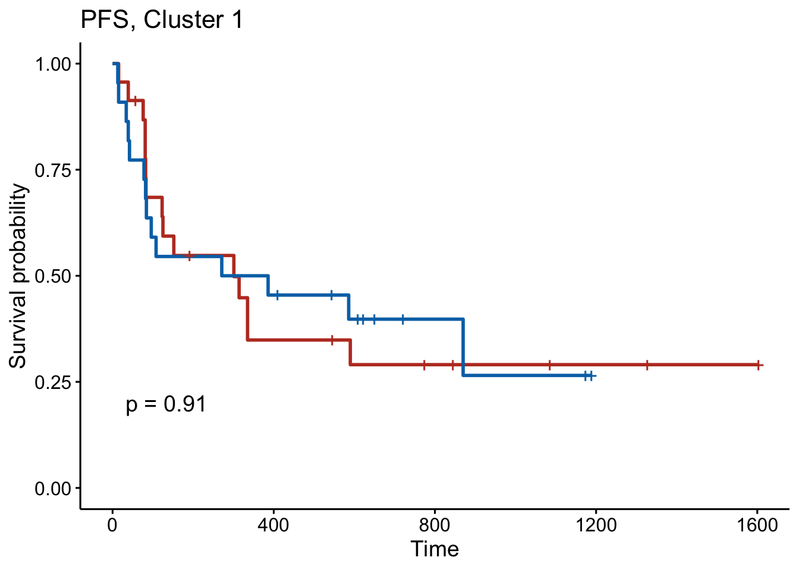
# cluster 2
c2_pfs_data <- pfs_data_rank %>%
dplyr::filter(c2_quartile %in% c("1", "4"))
pfs_surv_obj <- Surv(time = c2_pfs_data$pfs_days, event = c2_pfs_data$pfs_status)
fit_pfs <- survfit(pfs_surv_obj ~ c2_quartile, data = c2_pfs_data)
survdiff(pfs_surv_obj ~ c2_quartile, data = c2_pfs_data)Call:
survdiff(formula = pfs_surv_obj ~ c2_quartile, data = c2_pfs_data)
N Observed Expected (O-E)^2/E (O-E)^2/V
c2_quartile=1 23 19 8.35 13.60 22.1
c2_quartile=4 22 8 18.65 6.09 22.1
Chisq= 22.1 on 1 degrees of freedom, p= 3e-06 c2_plot <- ggsurvplot(fit_pfs,
data = c2_pfs_data,
pval = TRUE,
palette = "nejm",
legend = "none",
legend.title = "Macrophage cluster \nexpression quartile",
title = "PFS, Cluster 2",
risk.table = FALSE)
c2_plot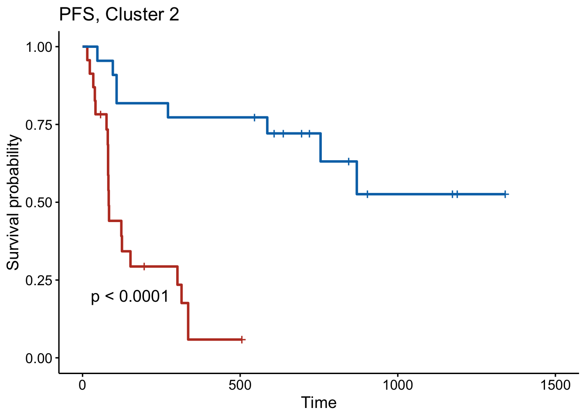
# cluster 3
c3_pfs_data <- pfs_data_rank %>%
dplyr::filter(c3_quartile %in% c("1", "4"))
pfs_surv_obj <- Surv(time = c3_pfs_data$pfs_days, event = c3_pfs_data$pfs_status)
fit_pfs <- survfit(pfs_surv_obj ~ c3_quartile, data = c3_pfs_data)
survdiff(pfs_surv_obj ~ c3_quartile, data = c3_pfs_data)Call:
survdiff(formula = pfs_surv_obj ~ c3_quartile, data = c3_pfs_data)
N Observed Expected (O-E)^2/E (O-E)^2/V
c3_quartile=1 23 18 12.6 2.35 4.29
c3_quartile=4 22 12 17.4 1.69 4.29
Chisq= 4.3 on 1 degrees of freedom, p= 0.04 c3_plot <- ggsurvplot(fit_pfs,
data = c3_pfs_data,
pval = TRUE,
palette = "nejm",
legend = "none",
legend.title = "Macrophage cluster \nexpression quartile",
title = "PFS, Cluster 3")
c3_plot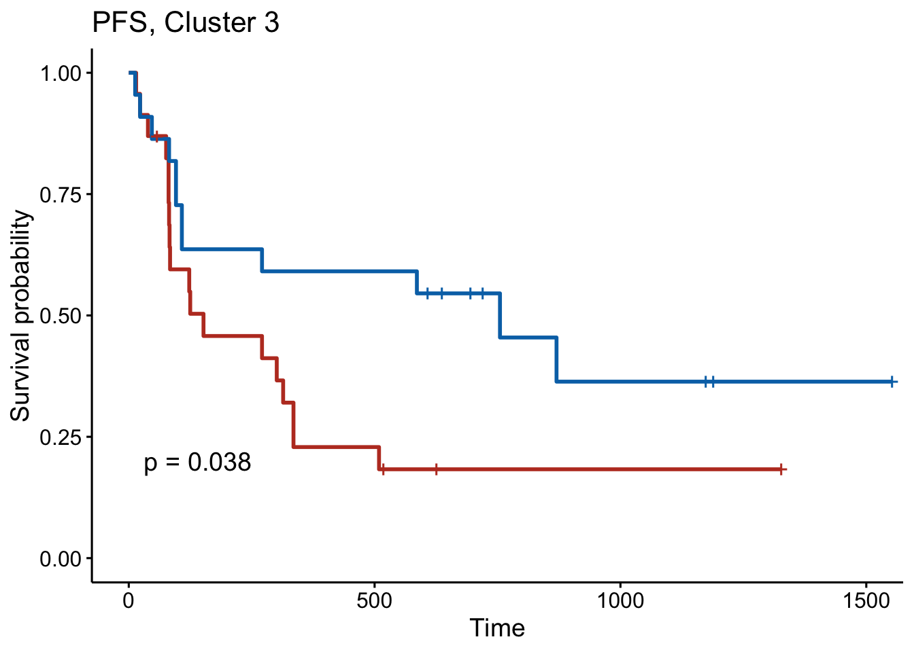
# cluster 4
c4_pfs_data <- pfs_data_rank %>%
dplyr::filter(c4_quartile %in% c("1", "4"))
pfs_surv_obj <- Surv(time = c4_pfs_data$pfs_days, event = c4_pfs_data$pfs_status)
fit_pfs <- survfit(pfs_surv_obj ~ c4_quartile, data = c4_pfs_data)
survdiff(pfs_surv_obj ~ c4_quartile, data = c4_pfs_data)Call:
survdiff(formula = pfs_surv_obj ~ c4_quartile, data = c4_pfs_data)
N Observed Expected (O-E)^2/E (O-E)^2/V
c4_quartile=1 23 15 12.4 0.541 1.01
c4_quartile=4 22 13 15.6 0.430 1.01
Chisq= 1 on 1 degrees of freedom, p= 0.3 c4_plot <- ggsurvplot(fit_pfs,
data = c4_pfs_data,
pval = TRUE,
palette = "nejm",
legend = "none",
legend.title = "Macrophage cluster \nexpression quartile",
title = "PFS, Cluster 4")
c4_plot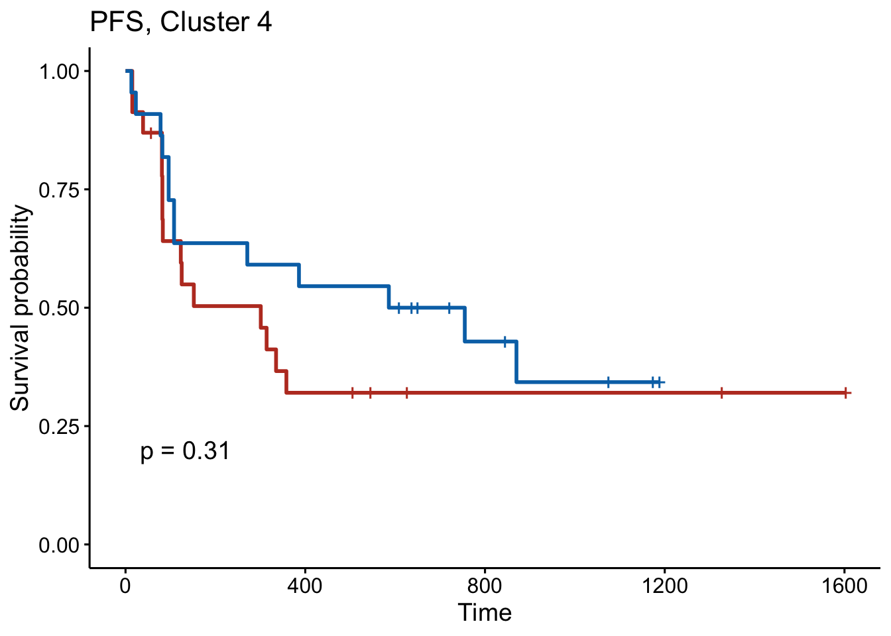
# cluster 5
c5_pfs_data <- pfs_data_rank %>%
dplyr::filter(c5_quartile %in% c("1", "4"))
pfs_surv_obj <- Surv(time = c5_pfs_data$pfs_days, event = c5_pfs_data$pfs_status)
fit_pfs <- survfit(pfs_surv_obj ~ c5_quartile, data = c5_pfs_data)
survdiff(pfs_surv_obj ~ c5_quartile, data = c5_pfs_data)Call:
survdiff(formula = pfs_surv_obj ~ c5_quartile, data = c5_pfs_data)
N Observed Expected (O-E)^2/E (O-E)^2/V
c5_quartile=1 23 17 12 2.13 3.8
c5_quartile=4 22 12 17 1.49 3.8
Chisq= 3.8 on 1 degrees of freedom, p= 0.05 c5_plot <- ggsurvplot(fit_pfs,
data = c5_pfs_data,
pval = TRUE,
palette = "nejm",
legend = "none",
legend.title = "Macrophage cluster \nexpression quartile",
title = "PFS, Cluster 5")
c5_plot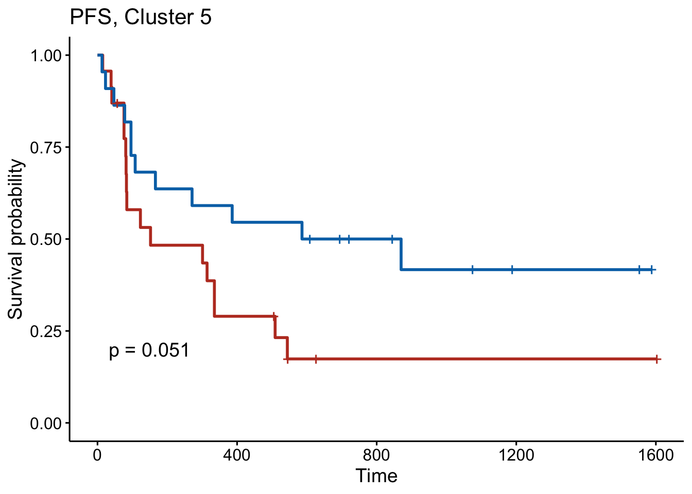
# cluster 6
c6_pfs_data <- pfs_data_rank %>%
dplyr::filter(c6_quartile %in% c("1", "4"))
pfs_surv_obj <- Surv(time = c6_pfs_data$pfs_days, event = c6_pfs_data$pfs_status)
fit_pfs <- survfit(pfs_surv_obj ~ c6_quartile, data = c6_pfs_data)
survdiff(pfs_surv_obj ~ c6_quartile, data = c6_pfs_data)Call:
survdiff(formula = pfs_surv_obj ~ c6_quartile, data = c6_pfs_data)
N Observed Expected (O-E)^2/E (O-E)^2/V
c6_quartile=1 23 15 12.3 0.590 1.16
c6_quartile=4 22 13 15.7 0.463 1.16
Chisq= 1.2 on 1 degrees of freedom, p= 0.3 c6_plot <- ggsurvplot(fit_pfs,
data = c6_pfs_data,
pval = TRUE,
palette = "nejm",
legend = "none",
legend.title = "Macrophage cluster \nexpression quartile",
title = "PFS, Cluster 6")
c6_plot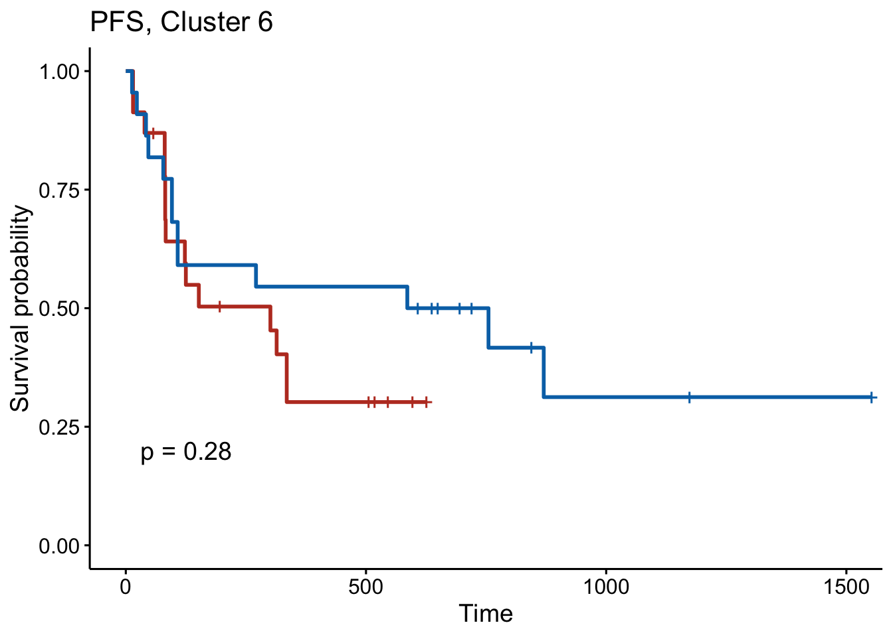
# cluster 7
c7_pfs_data <- pfs_data_rank %>%
dplyr::filter(c7_quartile %in% c("1", "4"))
pfs_surv_obj <- Surv(time = c7_pfs_data$pfs_days, event = c7_pfs_data$pfs_status)
fit_pfs <- survfit(pfs_surv_obj ~ c7_quartile, data = c7_pfs_data)
survdiff(pfs_surv_obj ~ c7_quartile, data = c7_pfs_data)Call:
survdiff(formula = pfs_surv_obj ~ c7_quartile, data = c7_pfs_data)
N Observed Expected (O-E)^2/E (O-E)^2/V
c7_quartile=1 23 19 9.95 8.23 13.9
c7_quartile=4 22 10 19.05 4.30 13.9
Chisq= 13.9 on 1 degrees of freedom, p= 2e-04 c7_plot <- ggsurvplot(fit_pfs,
data = c7_pfs_data,
pval = TRUE,
palette = "nejm",
legend = "right",
legend.title = "Macrophage cluster \nexpression quartile",
title = "PFS, Cluster 7")
c7_plot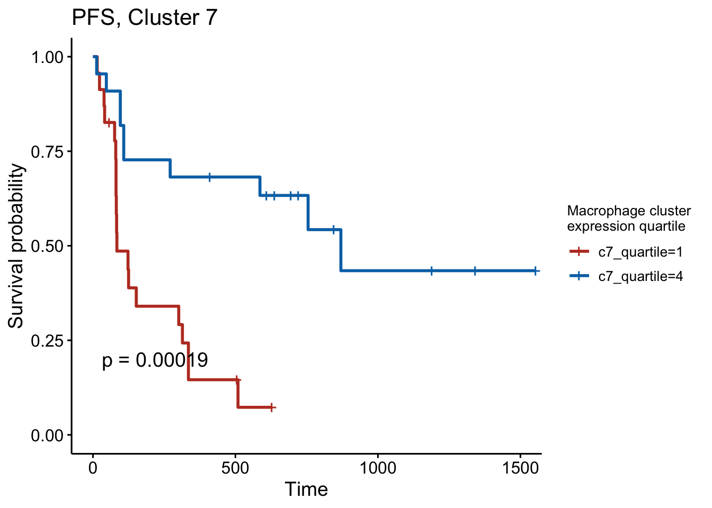
# t-cell
tcell_pfs_data <- pfs_data_rank %>%
dplyr::filter(tcell_quartile %in% c("1", "4"))
pfs_surv_obj <- Surv(time = tcell_pfs_data$pfs_days, event = tcell_pfs_data$pfs_status)
fit_pfs <- survfit(pfs_surv_obj ~ tcell_quartile, data = tcell_pfs_data)
survdiff(pfs_surv_obj ~ tcell_quartile, data = tcell_pfs_data)Call:
survdiff(formula = pfs_surv_obj ~ tcell_quartile, data = tcell_pfs_data)
N Observed Expected (O-E)^2/E (O-E)^2/V
tcell_quartile=1 23 18 10.1 6.27 10.7
tcell_quartile=4 22 9 16.9 3.72 10.7
Chisq= 10.7 on 1 degrees of freedom, p= 0.001 tcell_plot <- ggsurvplot(fit_pfs,
data = tcell_pfs_data,
pval = TRUE,
palette = "nejm",
legend = "right",
legend.title = "Tcell \nexpression quartile",
title = "PFS, Tcell")
tcell_plot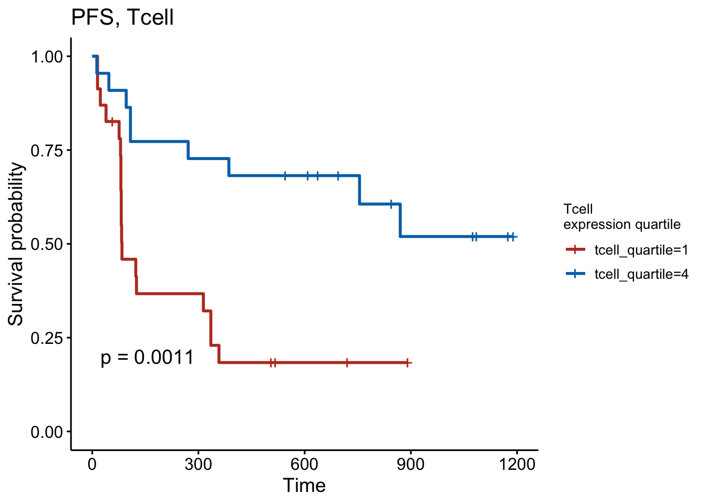
ggarrange(c1_plot$plot, c2_plot$plot, c3_plot$plot, c4_plot$plot, c5_plot$plot, c6_plot$plot, c7_plot$plot,
labels = c("A", "B", "C", "D", "E", "F", "G"),
ncol = 4, nrow = 2)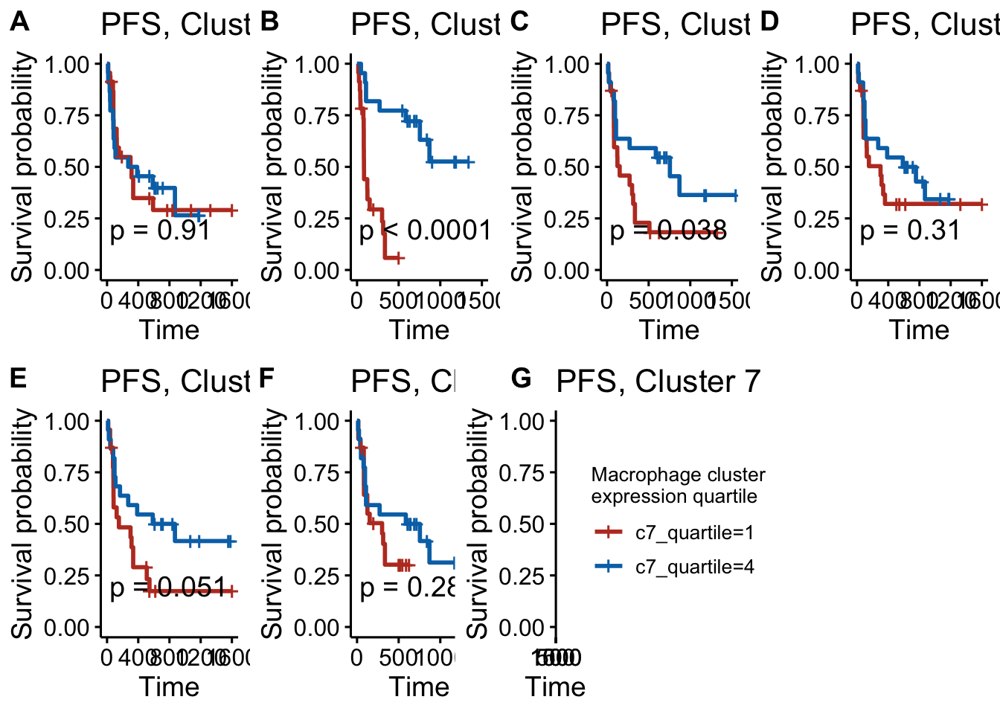
pfs_surv_obj <- Surv(time = pfs_data$pfs_days, event = pfs_data$pfs_status)
fit_pfs_cox <- coxph(pfs_surv_obj ~ c1_quartile +
c2_quartile +
c3_quartile +
c4_quartile +
c5_quartile +
c6_quartile +
c7_quartile,
data = pfs_data_rank)
summary(fit_pfs_cox)Call:
coxph(formula = pfs_surv_obj ~ c1_quartile + c2_quartile + c3_quartile +
c4_quartile + c5_quartile + c6_quartile + c7_quartile, data = pfs_data_rank)
n= 91, number of events= 51
coef exp(coef) se(coef) z Pr(>|z|)
c1_quartile 0.31343 1.36811 0.18113 1.730 0.08356 .
c2_quartile -1.30242 0.27187 0.36113 -3.607 0.00031 ***
c3_quartile -0.02766 0.97271 0.29651 -0.093 0.92566
c4_quartile -0.08820 0.91558 0.24983 -0.353 0.72406
c5_quartile -0.05056 0.95069 0.24426 -0.207 0.83600
c6_quartile 0.69560 2.00492 0.26457 2.629 0.00856 **
c7_quartile 0.09860 1.10362 0.39167 0.252 0.80125
---
Signif. codes: 0 '***' 0.001 '**' 0.01 '*' 0.05 '.' 0.1 ' ' 1
exp(coef) exp(-coef) lower .95 upper .95
c1_quartile 1.3681 0.7309 0.9593 1.9512
c2_quartile 0.2719 3.6782 0.1340 0.5518
c3_quartile 0.9727 1.0281 0.5440 1.7393
c4_quartile 0.9156 1.0922 0.5611 1.4940
c5_quartile 0.9507 1.0519 0.5890 1.5344
c6_quartile 2.0049 0.4988 1.1937 3.3674
c7_quartile 1.1036 0.9061 0.5122 2.3780
Concordance= 0.716 (se = 0.038 )
Likelihood ratio test= 34.25 on 7 df, p=2e-05
Wald test = 28.2 on 7 df, p=2e-04
Score (logrank) test = 30.35 on 7 df, p=8e-05tidy(fit_pfs_cox)# A tibble: 7 x 7
term estimate std.error statistic p.value conf.low conf.high
<chr> <dbl> <dbl> <dbl> <dbl> <dbl> <dbl>
1 c1_quartile 0.313 0.181 1.73 0.0836 -0.0416 0.668
2 c2_quartile -1.30 0.361 -3.61 0.000310 -2.01 -0.595
3 c3_quartile -0.0277 0.297 -0.0933 0.926 -0.609 0.553
4 c4_quartile -0.0882 0.250 -0.353 0.724 -0.578 0.401
5 c5_quartile -0.0506 0.244 -0.207 0.836 -0.529 0.428
6 c6_quartile 0.696 0.265 2.63 0.00856 0.177 1.21
7 c7_quartile 0.0986 0.392 0.252 0.801 -0.669 0.866Clean data
# get pheno data out of expressionset
# remove ocular and other types of melanoma (keep only cutaneous or not specified)
imtx_pdata <- pData(imtx_es) %>%
rownames_to_column(var = "sample_id") %>%
as_tibble() %>%
dplyr::filter(subtype %in% c("CUTANEOUS", NA)) %>%
print()# A tibble: 191 x 18
sample_id patient library read_group platform center date lane run
<chr> <chr> <chr> <chr> <chr> <chr> <chr> <dbl> <dbl>
1 ERR22088… gide_i… ERR220… ERR2208887 Illumina GIDE 1/1/… 1 356
2 ERR22088… gide_i… ERR220… ERR2208888 Illumina GIDE 1/1/… 1 356
3 ERR22088… gide_i… ERR220… ERR2208889 Illumina GIDE 1/1/… 5 434
4 ERR22088… gide_i… ERR220… ERR2208890 Illumina GIDE 1/1/… 5 356
5 ERR22088… gide_i… ERR220… ERR2208891 Illumina GIDE 1/1/… 6 434
6 ERR22088… gide_i… ERR220… ERR2208892 Illumina GIDE 1/1/… 6 434
7 ERR22088… gide_i… ERR220… ERR2208893 Illumina GIDE 1/1/… 4 434
8 ERR22088… gide_i… ERR220… ERR2208894 Illumina GIDE 1/1/… 4 434
9 ERR22088… gide_i… ERR220… ERR2208895 Illumina GIDE 1/1/… 5 356
10 ERR22088… gide_i… ERR220… ERR2208896 Illumina GIDE 1/1/… 1 0
# … with 181 more rows, and 9 more variables: flavor <chr>, genome <chr>,
# os_days <dbl>, os_status <dbl>, response <chr>, subtype <chr>,
# cyt <dbl>, pfs_days <dbl>, pfs_status <dbl># get cases with PFS data, merge with gsva results
os_data <- imtx_pdata %>%
drop_na(os_status) %>%
left_join(imtx_gsva_results) %>%
dplyr::select(os_status, os_days, response, everything()) %>%
print()Joining, by = "sample_id"# A tibble: 183 x 37
os_status os_days response sample_id patient library read_group platform
<dbl> <dbl> <chr> <chr> <chr> <chr> <chr> <chr>
1 0 689 PD ERR22088… gide_i… ERR220… ERR2208887 Illumina
2 0 689 PD ERR22088… gide_i… ERR220… ERR2208888 Illumina
3 1 176 PD ERR22088… gide_i… ERR220… ERR2208889 Illumina
4 0 293 PD ERR22088… gide_i… ERR220… ERR2208890 Illumina
5 1 357 PR ERR22088… gide_i… ERR220… ERR2208891 Illumina
6 1 357 PR ERR22088… gide_i… ERR220… ERR2208892 Illumina
7 0 691 SD ERR22088… gide_i… ERR220… ERR2208893 Illumina
8 1 660 SD ERR22088… gide_i… ERR220… ERR2208894 Illumina
9 0 196 PR ERR22088… gide_i… ERR220… ERR2208895 Illumina
10 0 635 SD ERR22088… gide_i… ERR220… ERR2208896 Illumina
# … with 173 more rows, and 29 more variables: center <chr>, date <chr>,
# lane <dbl>, run <dbl>, flavor <chr>, genome <chr>, subtype <chr>,
# cyt <dbl>, pfs_days <dbl>, pfs_status <dbl>, upreg_c1 <dbl>,
# upreg_c2 <dbl>, upreg_c3 <dbl>, upreg_c4 <dbl>, upreg_c5 <dbl>,
# upreg_c6 <dbl>, upreg_c7 <dbl>, downreg_c1 <dbl>, downreg_c2 <dbl>,
# downreg_c3 <dbl>, downreg_c4 <dbl>, downreg_c5 <dbl>,
# downreg_c6 <dbl>, downreg_c7 <dbl>, tcell_gset <dbl>,
# cxcl9_cxcl10 <dbl>, merck_tis_expanded_ifn <dbl>, m1_blueprint <dbl>,
# m2_blueprint <dbl># divide into quartiles by cluster expression
# 4 is highest quartile and 1 is lowest
os_data_rank <- os_data %>%
mutate(c1_quartile = ntile(upreg_c1, 4)) %>%
mutate(c2_quartile = ntile(upreg_c2, 4)) %>%
mutate(c3_quartile = ntile(upreg_c3, 4)) %>%
mutate(c4_quartile = ntile(upreg_c4, 4)) %>%
mutate(c5_quartile = ntile(upreg_c5, 4)) %>%
mutate(c6_quartile = ntile(upreg_c6, 4)) %>%
mutate(c7_quartile = ntile(upreg_c7, 4)) %>%
mutate(tcell_quartile = ntile(tcell_gset, 4)) %>%
dplyr::select(os_days, os_status, c1_quartile, c2_quartile, c3_quartile, c4_quartile, c5_quartile, c6_quartile, c7_quartile, tcell_quartile) %>%
print()# A tibble: 183 x 10
os_days os_status c1_quartile c2_quartile c3_quartile c4_quartile
<dbl> <dbl> <int> <int> <int> <int>
1 689 0 4 2 2 1
2 689 0 2 1 2 1
3 176 1 1 1 1 2
4 293 0 4 3 3 4
5 357 1 4 4 4 4
6 357 1 3 4 4 4
7 691 0 1 1 1 1
8 660 1 1 1 1 1
9 196 0 2 1 2 1
10 635 0 2 3 2 2
# … with 173 more rows, and 4 more variables: c5_quartile <int>,
# c6_quartile <int>, c7_quartile <int>, tcell_quartile <int>KM OS plots
# cluster 1
c1_os_data <- os_data_rank %>%
dplyr::filter(c1_quartile %in% c("1", "4"))
os_surv_obj <- Surv(time = c1_os_data$os_days, event = c1_os_data$os_status)
fit_os <- survfit(os_surv_obj ~ c1_quartile, data = c1_os_data)
survdiff(os_surv_obj ~ c1_quartile, data = c1_os_data)Call:
survdiff(formula = os_surv_obj ~ c1_quartile, data = c1_os_data)
n=77, 14 observations deleted due to missingness.
N Observed Expected (O-E)^2/E (O-E)^2/V
c1_quartile=1 40 26 19.3 2.29 4.88
c1_quartile=4 37 11 17.7 2.51 4.88
Chisq= 4.9 on 1 degrees of freedom, p= 0.03 c1_plot <- ggsurvplot(fit_os,
data = c1_os_data,
pval = TRUE,
palette = "nejm",
legend = "none",
legend.title = "Macrophage cluster \nexpression quartile",
title = "OS, Cluster 1")
c1_plot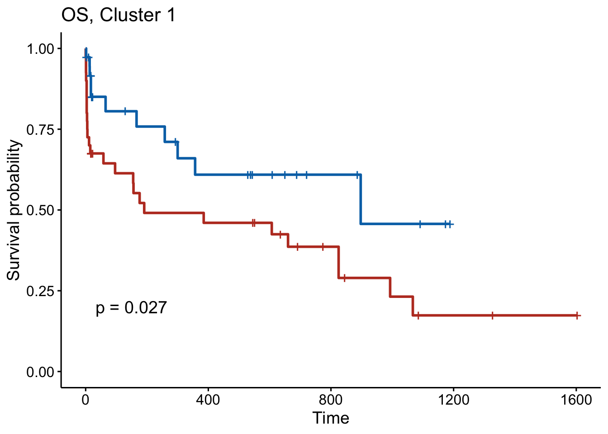
# cluster 2
c2_os_data <- os_data_rank %>%
dplyr::filter(c2_quartile %in% c("1", "4"))
os_surv_obj <- Surv(time = c2_os_data$os_days, event = c2_os_data$os_status)
fit_os <- survfit(os_surv_obj ~ c2_quartile, data = c2_os_data)
survdiff(os_surv_obj ~ c2_quartile, data = c2_os_data)Call:
survdiff(formula = os_surv_obj ~ c2_quartile, data = c2_os_data)
n=78, 13 observations deleted due to missingness.
N Observed Expected (O-E)^2/E (O-E)^2/V
c2_quartile=1 40 27 17.2 5.53 10.3
c2_quartile=4 38 12 21.8 4.38 10.3
Chisq= 10.3 on 1 degrees of freedom, p= 0.001 c2_plot <- ggsurvplot(fit_os,
data = c2_os_data,
pval = TRUE,
palette = "nejm",
legend = "none",
legend.title = "Macrophage cluster \nexpression quartile",
title = "OS, Cluster 2",
risk.table = FALSE)
c2_plot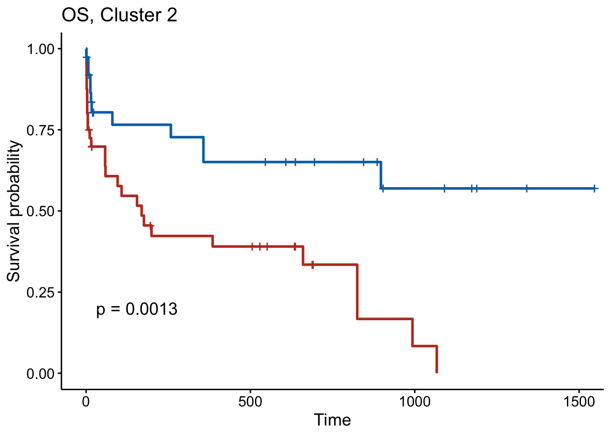
# cluster 3
c3_os_data <- os_data_rank %>%
dplyr::filter(c3_quartile %in% c("1", "4"))
os_surv_obj <- Surv(time = c3_os_data$os_days, event = c3_os_data$os_status)
fit_os <- survfit(os_surv_obj ~ c3_quartile, data = c3_os_data)
survdiff(os_surv_obj ~ c3_quartile, data = c3_os_data)Call:
survdiff(formula = os_surv_obj ~ c3_quartile, data = c3_os_data)
n=81, 10 observations deleted due to missingness.
N Observed Expected (O-E)^2/E (O-E)^2/V
c3_quartile=1 42 29 20.9 3.17 6.17
c3_quartile=4 39 15 23.1 2.86 6.17
Chisq= 6.2 on 1 degrees of freedom, p= 0.01 c3_plot <- ggsurvplot(fit_os,
data = c3_os_data,
pval = TRUE,
palette = "nejm",
legend = "none",
legend.title = "Macrophage cluster \nexpression quartile",
title = "OS, Cluster 3")
c3_plot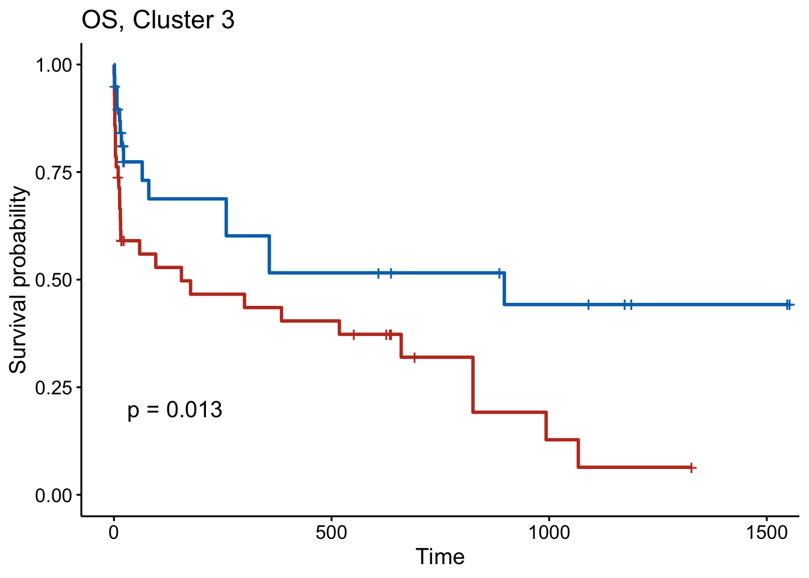
# cluster 4
c4_os_data <- os_data_rank %>%
dplyr::filter(c4_quartile %in% c("1", "4"))
os_surv_obj <- Surv(time = c4_os_data$os_days, event = c4_os_data$os_status)
fit_os <- survfit(os_surv_obj ~ c4_quartile, data = c4_os_data)
survdiff(os_surv_obj ~ c4_quartile, data = c4_os_data)Call:
survdiff(formula = os_surv_obj ~ c4_quartile, data = c4_os_data)
n=82, 9 observations deleted due to missingness.
N Observed Expected (O-E)^2/E (O-E)^2/V
c4_quartile=1 41 21 17.2 0.836 1.64
c4_quartile=4 41 15 18.8 0.765 1.64
Chisq= 1.6 on 1 degrees of freedom, p= 0.2 c4_plot <- ggsurvplot(fit_os,
data = c4_os_data,
pval = TRUE,
palette = "nejm",
legend = "none",
legend.title = "Macrophage cluster \nexpression quartile",
title = "OS, Cluster 4")
c4_plot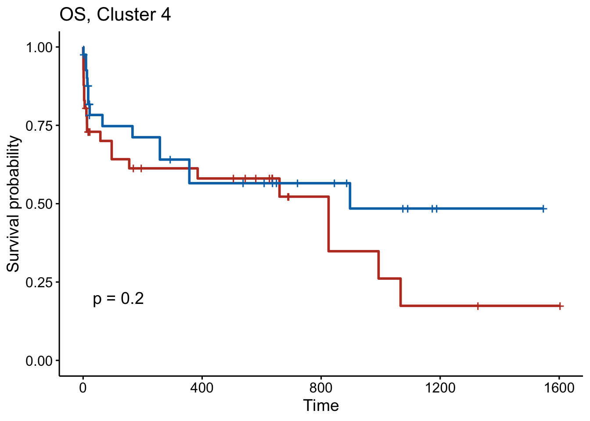
# cluster 5
c5_os_data <- os_data_rank %>%
dplyr::filter(c5_quartile %in% c("1", "4"))
os_surv_obj <- Surv(time = c5_os_data$os_days, event = c5_os_data$os_status)
fit_os <- survfit(os_surv_obj ~ c5_quartile, data = c5_os_data)
survdiff(os_surv_obj ~ c5_quartile, data = c5_os_data)Call:
survdiff(formula = os_surv_obj ~ c5_quartile, data = c5_os_data)
n=79, 12 observations deleted due to missingness.
N Observed Expected (O-E)^2/E (O-E)^2/V
c5_quartile=1 39 24 16.9 3.02 5.69
c5_quartile=4 40 13 20.1 2.53 5.69
Chisq= 5.7 on 1 degrees of freedom, p= 0.02 c5_plot <- ggsurvplot(fit_os,
data = c5_os_data,
pval = TRUE,
palette = "nejm",
legend = "none",
legend.title = "Macrophage cluster \nexpression quartile",
title = "OS, Cluster 5")
c5_plot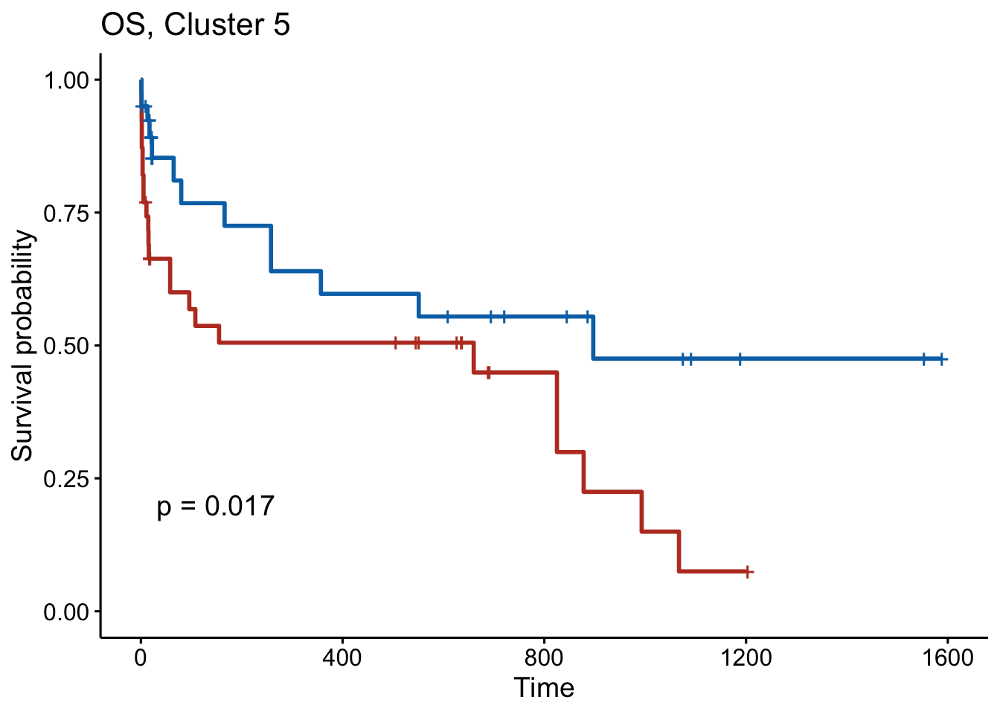
# cluster 6
c6_os_data <- os_data_rank %>%
dplyr::filter(c6_quartile %in% c("1", "4"))
os_surv_obj <- Surv(time = c6_os_data$os_days, event = c6_os_data$os_status)
fit_os <- survfit(os_surv_obj ~ c6_quartile, data = c6_os_data)
survdiff(os_surv_obj ~ c6_quartile, data = c6_os_data)Call:
survdiff(formula = os_surv_obj ~ c6_quartile, data = c6_os_data)
n=81, 10 observations deleted due to missingness.
N Observed Expected (O-E)^2/E (O-E)^2/V
c6_quartile=1 42 27 20.1 2.35 4.58
c6_quartile=4 39 16 22.9 2.07 4.58
Chisq= 4.6 on 1 degrees of freedom, p= 0.03 c6_plot <- ggsurvplot(fit_os,
data = c6_os_data,
pval = TRUE,
palette = "nejm",
legend = "none",
legend.title = "Macrophage cluster \nexpression quartile",
title = "OS, Cluster 6")
c6_plot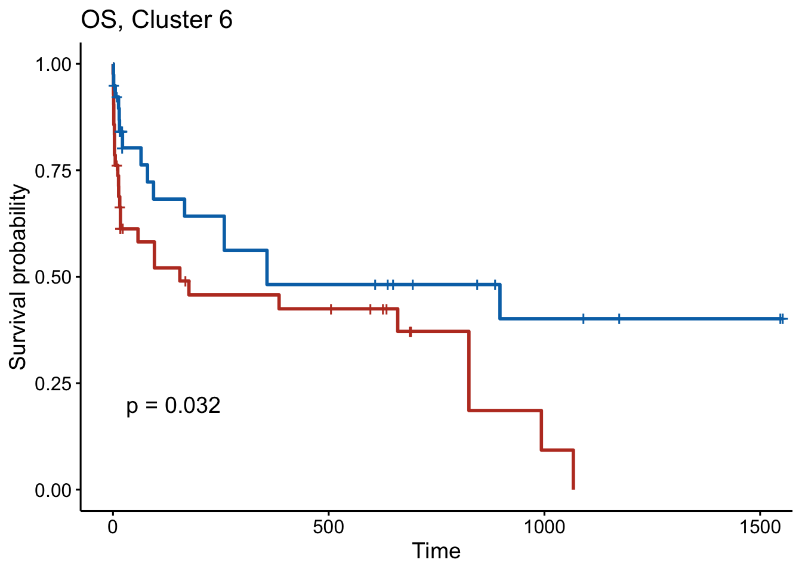
# cluster 7
c7_os_data <- os_data_rank %>%
dplyr::filter(c7_quartile %in% c("1", "4"))
os_surv_obj <- Surv(time = c7_os_data$os_days, event = c7_os_data$os_status)
fit_os <- survfit(os_surv_obj ~ c7_quartile, data = c7_os_data)
survdiff(os_surv_obj ~ c7_quartile, data = c7_os_data)Call:
survdiff(formula = os_surv_obj ~ c7_quartile, data = c7_os_data)
n=77, 14 observations deleted due to missingness.
N Observed Expected (O-E)^2/E (O-E)^2/V
c7_quartile=1 41 28 18.3 5.16 10
c7_quartile=4 36 11 20.7 4.56 10
Chisq= 10 on 1 degrees of freedom, p= 0.002 c7_plot <- ggsurvplot(fit_os,
data = c7_os_data,
pval = TRUE,
palette = "nejm",
legend = "right",
legend.title = "Macrophage cluster \nexpression quartile",
title = "OS, Cluster 7")
c7_plot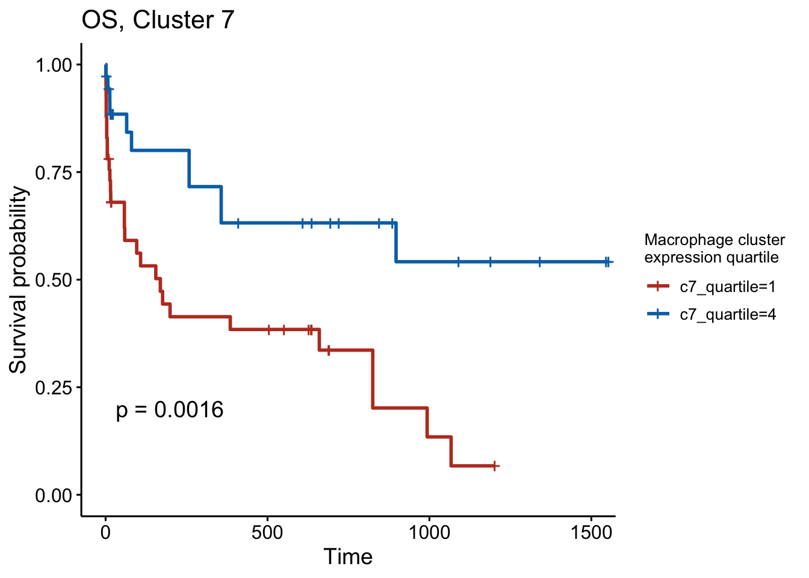
# t-cell
tcell_os_data <- os_data_rank %>%
dplyr::filter(tcell_quartile %in% c("1", "4"))
os_surv_obj <- Surv(time = tcell_os_data$os_days, event = tcell_os_data$os_status)
fit_os <- survfit(os_surv_obj ~ tcell_quartile, data = tcell_os_data)
survdiff(os_surv_obj ~ tcell_quartile, data = tcell_os_data)Call:
survdiff(formula = os_surv_obj ~ tcell_quartile, data = tcell_os_data)
n=79, 12 observations deleted due to missingness.
N Observed Expected (O-E)^2/E (O-E)^2/V
tcell_quartile=1 41 28 17 7.19 13.2
tcell_quartile=4 38 11 22 5.53 13.2
Chisq= 13.2 on 1 degrees of freedom, p= 3e-04 tcell_plot <- ggsurvplot(fit_os,
data = tcell_os_data,
pval = TRUE,
palette = "nejm",
legend = "right",
legend.title = "Tcell \nexpression quartile",
title = "os, Tcell")
tcell_plot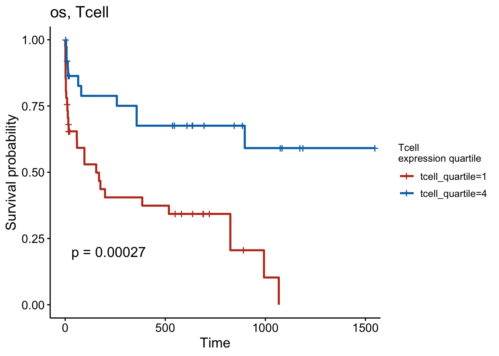
ggarrange(c1_plot$plot, c2_plot$plot, c3_plot$plot, c4_plot$plot, c5_plot$plot, c6_plot$plot, c7_plot$plot,
labels = c("A", "B", "C", "D", "E", "F", "G"),
ncol = 4, nrow = 2,
common.legend = TRUE,
legend = "bottom")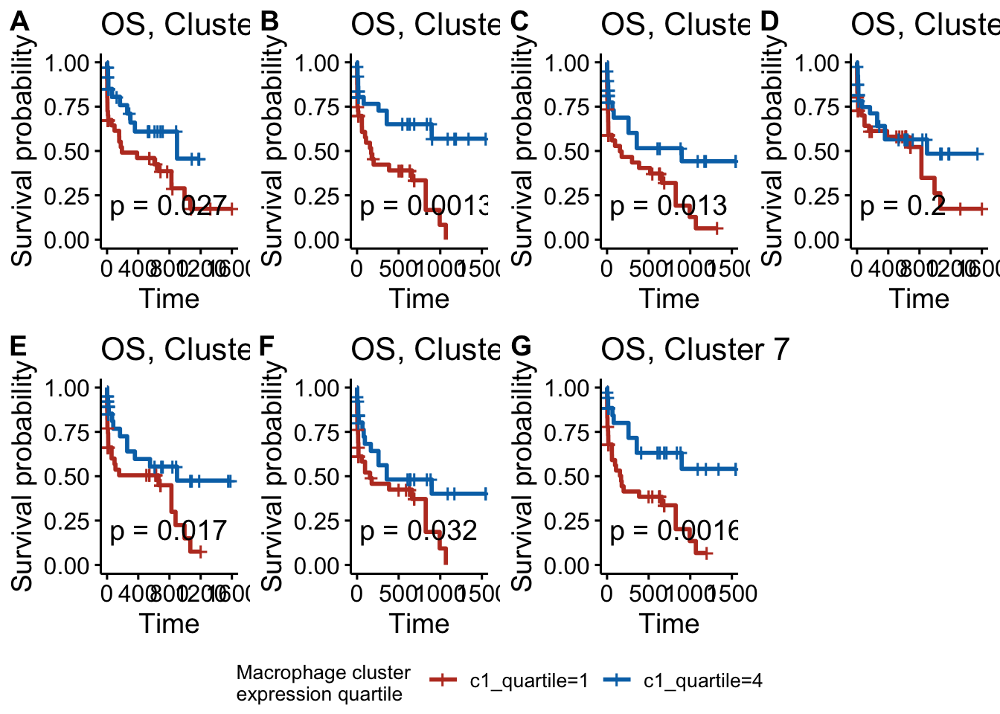
os_surv_obj <- Surv(time = os_data$os_days, event = os_data$os_status)
fit_os_cox <- coxph(os_surv_obj ~ c1_quartile +
c2_quartile +
c3_quartile +
c4_quartile +
c5_quartile +
c6_quartile +
c7_quartile,
data = os_data_rank)
summary(fit_os_cox)Call:
coxph(formula = os_surv_obj ~ c1_quartile + c2_quartile + c3_quartile +
c4_quartile + c5_quartile + c6_quartile + c7_quartile, data = os_data_rank)
n= 157, number of events= 78
(26 observations deleted due to missingness)
coef exp(coef) se(coef) z Pr(>|z|)
c1_quartile -0.06319 0.93877 0.14614 -0.432 0.665
c2_quartile -0.25983 0.77118 0.26666 -0.974 0.330
c3_quartile -0.20122 0.81773 0.25709 -0.783 0.434
c4_quartile 0.24796 1.28141 0.20959 1.183 0.237
c5_quartile 0.15110 1.16312 0.21701 0.696 0.486
c6_quartile 0.05558 1.05716 0.20019 0.278 0.781
c7_quartile -0.25025 0.77860 0.31132 -0.804 0.421
exp(coef) exp(-coef) lower .95 upper .95
c1_quartile 0.9388 1.0652 0.7050 1.250
c2_quartile 0.7712 1.2967 0.4573 1.301
c3_quartile 0.8177 1.2229 0.4941 1.353
c4_quartile 1.2814 0.7804 0.8497 1.932
c5_quartile 1.1631 0.8598 0.7602 1.780
c6_quartile 1.0572 0.9459 0.7141 1.565
c7_quartile 0.7786 1.2844 0.4230 1.433
Concordance= 0.61 (se = 0.034 )
Likelihood ratio test= 14.65 on 7 df, p=0.04
Wald test = 13.74 on 7 df, p=0.06
Score (logrank) test = 14.18 on 7 df, p=0.05tidy(fit_os_cox)# A tibble: 7 x 7
term estimate std.error statistic p.value conf.low conf.high
<chr> <dbl> <dbl> <dbl> <dbl> <dbl> <dbl>
1 c1_quartile -0.0632 0.146 -0.432 0.665 -0.350 0.223
2 c2_quartile -0.260 0.267 -0.974 0.330 -0.782 0.263
3 c3_quartile -0.201 0.257 -0.783 0.434 -0.705 0.303
4 c4_quartile 0.248 0.210 1.18 0.237 -0.163 0.659
5 c5_quartile 0.151 0.217 0.696 0.486 -0.274 0.576
6 c6_quartile 0.0556 0.200 0.278 0.781 -0.337 0.448
7 c7_quartile -0.250 0.311 -0.804 0.421 -0.860 0.360
sessionInfo()R version 3.5.3 (2019-03-11)
Platform: x86_64-apple-darwin15.6.0 (64-bit)
Running under: macOS Mojave 10.14.4
Matrix products: default
BLAS: /Library/Frameworks/R.framework/Versions/3.5/Resources/lib/libRblas.0.dylib
LAPACK: /Library/Frameworks/R.framework/Versions/3.5/Resources/lib/libRlapack.dylib
locale:
[1] en_US.UTF-8/en_US.UTF-8/en_US.UTF-8/C/en_US.UTF-8/en_US.UTF-8
attached base packages:
[1] parallel stats graphics grDevices utils datasets methods
[8] base
other attached packages:
[1] Biobase_2.42.0 BiocGenerics_0.28.0 broom_0.5.2
[4] viridis_0.5.1 viridisLite_0.3.0 ggsci_2.9
[7] survminer_0.4.6 ggpubr_0.2.3 magrittr_1.5
[10] survival_2.44-1.1 forcats_0.4.0 stringr_1.4.0
[13] dplyr_0.8.3 purrr_0.3.2 readr_1.3.1
[16] tidyr_1.0.0 tibble_2.1.3 ggplot2_3.2.1
[19] tidyverse_1.2.1
loaded via a namespace (and not attached):
[1] Rcpp_1.0.2 lubridate_1.7.4 lattice_0.20-38
[4] zoo_1.8-6 utf8_1.1.4 assertthat_0.2.1
[7] zeallot_0.1.0 rprojroot_1.3-2 digest_0.6.21
[10] R6_2.4.0 cellranger_1.1.0 backports_1.1.5
[13] evaluate_0.14 httr_1.4.1 pillar_1.4.2
[16] rlang_0.4.0 lazyeval_0.2.2 readxl_1.3.1
[19] rstudioapi_0.10 data.table_1.12.2 Matrix_1.2-17
[22] rmarkdown_1.16 labeling_0.3 splines_3.5.3
[25] munsell_0.5.0 compiler_3.5.3 modelr_0.1.5
[28] xfun_0.10 pkgconfig_2.0.3 htmltools_0.4.0
[31] tidyselect_0.2.5 gridExtra_2.3 km.ci_0.5-2
[34] workflowr_1.4.0 fansi_0.4.0 crayon_1.3.4
[37] withr_2.1.2 grid_3.5.3 nlme_3.1-141
[40] jsonlite_1.6 xtable_1.8-4 gtable_0.3.0
[43] lifecycle_0.1.0 git2r_0.26.1 KMsurv_0.1-5
[46] scales_1.0.0 cli_1.1.0 stringi_1.4.3
[49] ggsignif_0.6.0 fs_1.3.1 xml2_1.2.2
[52] ellipsis_0.3.0 survMisc_0.5.5 generics_0.0.2
[55] vctrs_0.2.0 cowplot_1.0.0 tools_3.5.3
[58] glue_1.3.1 hms_0.5.1 yaml_2.2.0
[61] colorspace_1.4-1 rvest_0.3.4 knitr_1.25
[64] haven_2.1.1